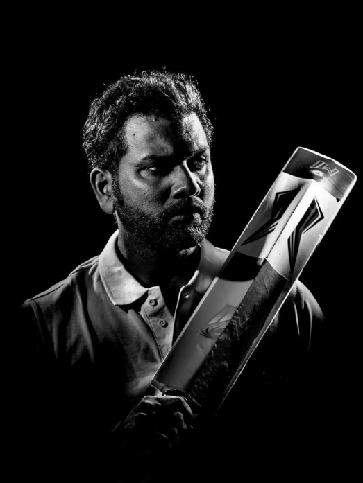

“Don’t be afraid of being different, be afraid of being like everyone else.”
Rohit Sharma, known as the "Hitman" of Indian cricket, has made a significant impact on the sport. Born in 1987, Sharma joined a local cricket camp in Mumbai and quickly made waves in the Mumbai cricket circuit. He made his One Day International debut in 2007 and holds the record for the highest individual score in ODIs, a staggering 264 runs against Sri Lanka in 2014. Sharma is also a master of the double century, converting centuries into double centuries, making him one of the most formidable limited-overs batsmen in the history of the game. He has captained the Indian cricket team in various formats and is known for his philanthropic efforts, including initiatives to nurture young talent in cricket. Sharma's journey from a young boy to a successful cricketer is an inspiration to millions.